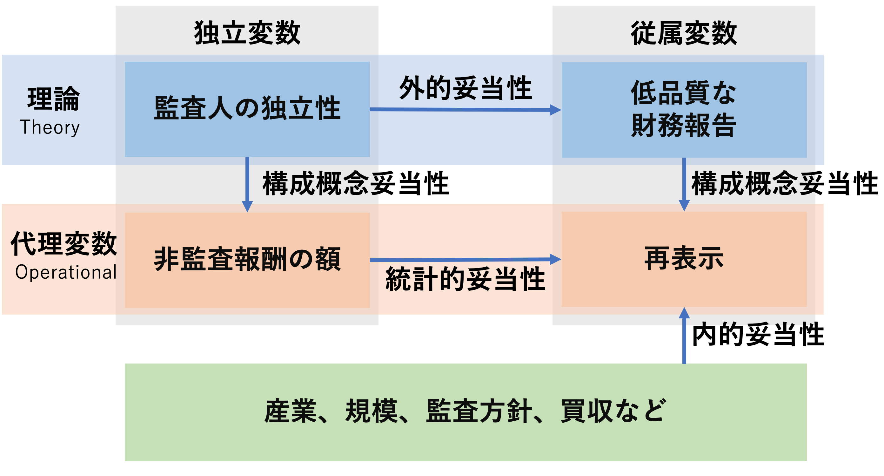
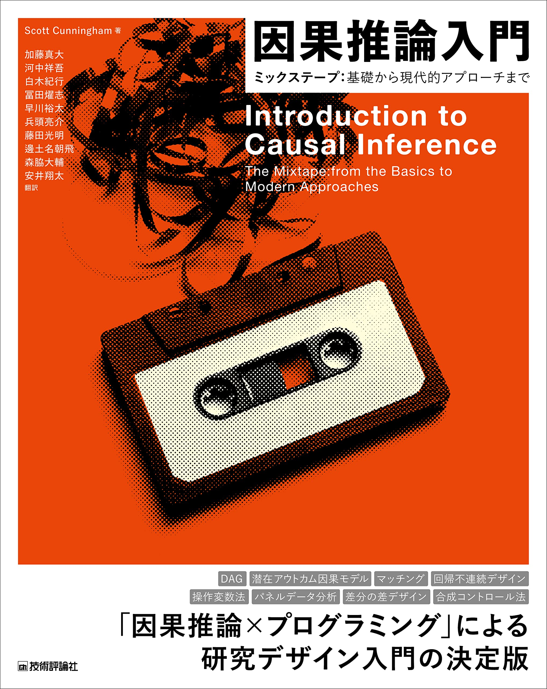
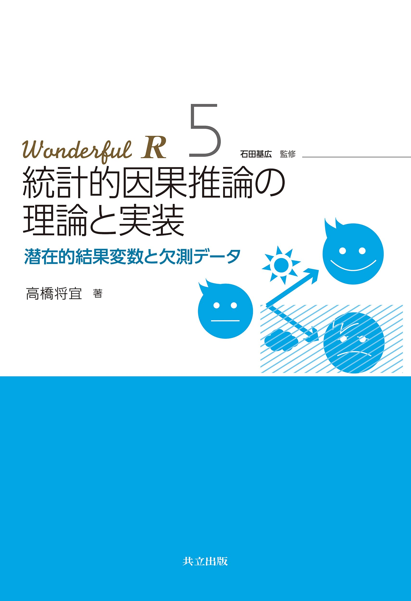
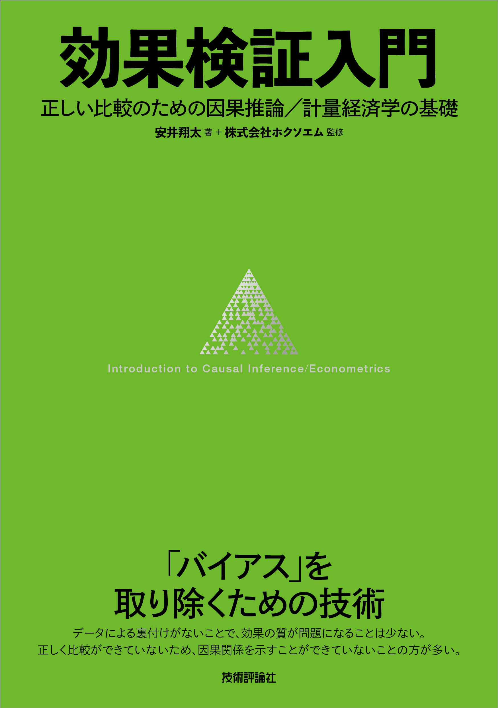

3 理論と仮説
第2回講義の到達目標は、
- リサーチ・クエスチョンを設定することができる。
- 作業仮説を作る。
- 作業仮説を検証するためのデータを集めることができる。
- 代理変数の妥当性を検討することができる。
です。 第1回講義の到達度検証のための課題は、以下の通りです。
- 構成概念を定義し、因果関係を示す理論を説明できる。
- 作業仮説を作り、構成概念を検証するための代理変数を構築する。
- 構成概念の代理変数として複数の候補を挙げる。
- Kinny’s Bosを作成する。

たとえば、監査研究の一例を挙げてみると、次のような図になります。

3.1 「よい理論」とは？
実証研究のリサーチ・デザイン(research design)のプロセスは次のような手順になります。
- パズルを見つける（簡単には見付からないです）
- パズルを説明するための複数の前提条件を使って理論を作る。（前提条件を自分で考えるのは難しすぎるので、先行研究を参考にすることが多いです。理論はパズルを説明するための仮説の集合体です。）
- 理論から作業仮説(working hypothesis, hypothesis)を引き出す。
- 作業仮説を検証するためのデータを集める。
- データを使って作業仮説を検証し、理論の妥当性を確かめる。
理想的にはこうなるでしょうが、現実にはこんなにうまくいきませんが、この講義では3〜5のプロセスを重視します。というのも、1と2のステップはかなり難しいので、現実には、
- 興味のある経営現象を見つけて調べる。
- 経営現象の発生を説明するための理論を見つけるために、先行研究を漁る。
- 先行研究を参考にして作業仮説を作る。
という風に行われることが多い（と思います。たぶん）
3.1.1 因果法則の3つの条件
因果関係(causality)と相関関係(correlation)の違いを理解しておきましょう。
因果関係は、近年の社会科学領域の研究で最も注目されているキーワードでしょう。 もともと因果関係を特定し、推定する研究は数多く行われてきましたが、近年になって発達した計量経済学や実験経済学の手法を使って、より厳密に因果関係を特定しようとする研究が増え、因果関係を適切に特定することの重要性が認識されるようになりました。
例えば、こんな本が近年出版されています。



因果関係とは、原因(causal)と結果(outcome)の関係のことです。正確に言うと、ある要因Xを操作するとき、別の要因Yが変化することです(Imbens and Rubin, 2015, p.4)。
因果関係を考える際には、「効果をもたらした原因」(causal of effect)と「原因のもたらす効果」(effect of cause)の両方を考える必要があります。 例えば、ある企業が従業員の給料を上げたとします。 このとき、従業員の給料が上がったことが「効果をもたらした原因」であり、従業員の給料が上がったことによって、従業員のモチベーションが上がったことが「原因のもたらす効果」です。 定量的な研究では、「原因のもたらす効果」を分析することが多いです。
因果関係があると考えるためには、3つの条件を確かめる必要があります。
- 原因が結果より先に起こる。
- 原因と結果が共変する。
- 原因以外の重要な要因が変化しない。
この因果関係を記述するものを理論といいます。
3.1.2 理論とは
理論とは「原因と結果について一般的な論述」で、「〇〇であるとき、△△が起こる」というようなものです。推論といってもよいです。 原因と結果の関係を「説明変数X」(explanatory variable)と「応答変数Y」(response variable)の関係として表現します。
X \Longrightarrow Y
推論を作る際には，どれだけ説得力があり納得できる仮定を設定するかが重要となります。仮定のない推論など役に立たないからです。 経営学は独自の理論をもたない学問とも言われ，とりわけ会計学における事実解明的研究(positive research)では，心理学や経済学で蓄積された理論を借用することが多いです（松浦は経済学に基づく推論を行っています）。
3.1.3 良い理論とは？
良い理論・推論が持つべき性質は次のようなものです。
- 反証可能であること
- 観察可能な予測が多いこと
- 具体的であること
- シンプルであること
以下ではそれぞれについて簡単に説明します。
反証可能であること
「反証可能性」(falsifiability)という科学で最も重要な特性の1つを確保する必要があります 1 。
つまり，論文を読んだ人ならだれでも，「この理論は間違っている」ということを示すことができるようにする必要があります。 反証可能性がない主張は占いと変わりません。
観察可能な予測が多いこと
結果として発生する現象が観察可能である予測を行う必要があることを示しています。 当然ですが，自分の主張を証拠を用いて説得力を高めようとしているのですから，その予測が当たっているのかどうかを確認できる必要があります。
具体的であること
「業績が悪くなる」のようにあいまいな表現ではなく，「昨年度と比べて利益が減少する」とか「累積リターンがマイナスになる」といったように，具体的な予測を行う必要があります。「リスク」とか「パフォーマンス」とか「悪くなる」とか「加速する」といったあいまいな言葉は常に定義してから使うようにしましょう。
シンプルであること
理論はシンプルでなければなりません。 理解しやすく，使える範囲が広く，反証可能性が高い理論は，シンプルになっていきます。
基本的には，先行研究で使われている理論を援用することが多い経営学・会計学では，先行研究で用いられた理論や推論に無駄がないかどうか，よりシンプルにいえないかどうか，を考えることが多いです。
理論をシンプルにするには，前提となる条件を少なくする必要があります。 観察された経営現象をそのまま記述しようとすると非常に長く，複雑な文章になるでしょう。 それでは何が本質的に重要か分からないので，経営現象を抽象化・単純化することで，本質以外のものをそぎ落とし，理論をシンプルにすることがで，経営現象への理解がより深まります(オッカムの剃刀)。
3.2 仮説と仮説検証
3.2.1 仮説とは
科学的には，「理論」と「仮説」とは同じものです。 反証されずに生き残った理論を仮説(hypothesis)と呼びます。 たとえば、ニュートンの万有引力の法則は，現在でも仮説として使われています。
この「仮説」をより具体的にしたものを「作業仮説」(working hypothesis)と呼びます。
- 作業仮説とは，自分が使える特定の変数についての記述
- 「もしこの仮説が正しければ・・・のはず」
- 理論より作業仮説の方が具体的である
- 仮説から引き出される観察可能な予測について述べる
3.2.2 作業仮説
たとえば「監査の質が高いほど，財務報告の質が高くなる」という理論から，作業仮説を引き出してみましょう。 この文章の中で，
- 監査の質
- 高い
- 財務報告の質
- 高い
という4つの用語を，測定可能な尺度にして，その高低を定義する必要があります。
たとえば，監査の質を「監査報酬額」で測定して，財務報告の質を利益操作の程度で測定するとします。利益操作の程度を異常アクルーアルで代理すると
- 監査報酬が、同業他社平均より高い企業ほど，異常アクルーアルの絶対値が小さい
という作業仮説を立てることができます。
理論から作業仮説を導出することは、構成概念から代理変数を導出すること深く関連しています。 この作業のコツをつかむには、良質な論文を読んで、自分でまとめてみて、他人に聞いてもらい、議論することが重要です。 そうして、自分の理論を作り上げていくのです。
「反証不可能な理論は科学ではない」といったのは，科学哲学者カール・ポパー(Karl Popper)です。 Popper (1959) The Logic of Scientific Discovery, London: Hutchinson.（邦訳：ポパー（1971）『科学的発見の論理 上下巻』，恒星社厚生閣）↩︎